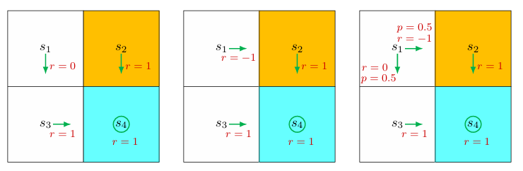

第2章 状态价值与 Bellman 方程
2.1 回报的重要性
强化学习中的策略优劣，首先体现为智能体沿轨迹能够获得怎样的长期累积收益。单步奖励只能反映局部后果，而回报则把当前决策对未来的影响一并纳入，因此它构成了策略评价的基本尺度。
设折扣因子为 。在一个四状态示例中，三种策略仅在状态 处不同。第一种策略使智能体从 转向安全路径，轨迹为 ，其折扣回报为
第二种策略使智能体先进入惩罚区域，轨迹为 ，于是
第三种策略在 处以概率 走向安全路径、以概率 走向惩罚路径，因此从 出发的平均回报为
由此可得
这个结果表明，能够避免进入惩罚区域的策略具有更高的长期收益，因而是更优的策略。回报的重要性正在于此：它把“是否值得采取某策略”转化为可比较的数学量。第三个量本质上已经不是单条确定轨迹的回报，而是随机情形下的期望意义上的回报，这一过渡自然引出状态价值的概念。
2.2 回报的两种计算方式与自举思想
2.2.1 按定义直接展开
回报的定义是未来奖励的折扣和。对一个按固定顺序循环经过四个状态的系统，若从 出发得到的回报记为 ，对应即时奖励分别为 ，则
这种写法完全依据定义，能够直接表达“从当前开始，未来所有奖励按时间远近递减加权”的含义。
2.2.2 用未来回报表示当前回报
同一组量还可以改写为
这组关系揭示了一个核心现象：当前量的值依赖于后继量的值，而后继量又继续依赖其他量，最终形成相互嵌套的结构。==这种“用自身未来形式来定义自身”的思想称为自举。== 自举并不意味着逻辑循环无法求解，因为把所有状态的方程联合起来，它就是一组线性方程。
将上式写成矩阵形式，
其中 是回报向量， 是即时奖励向量， 是由状态转移关系构成的矩阵。于是
这已经给出了 Bellman 方程最基本的结构雏形：当前值等于即时收益与折扣后的后继值之和。
2.3 状态价值
2.3.1 定义与记号
设时间步为 。在时刻 ，系统状态为 ，根据策略 选择动作 ，转移到下一状态 ，并得到即时奖励 。这个过程可写为
其中， 都是随机变量。若从时刻 开始，沿轨迹得到的折扣回报为
则在给定策略 下，状态 的状态价值定义为
状态价值是条件期望，表示“在当前位于状态 且之后始终遵循策略 的前提下，能够获得的平均长期回报”。
2.3.2 状态价值的性质
状态价值有三个基本特征。
第一，它依赖于状态 。不同起始状态通向的未来轨迹分布不同，因此期望回报不同。
第二，它依赖于策略 。即使起始状态相同，不同策略会导致不同动作序列与转移路径，因此状态价值也会改变。
第三，在给定策略和稳定环境后，它不显式依赖于时间步 。在离散 Markov 决策过程中，状态价值反映的是“从该状态出发”的长期意义，而非某个绝对时间点的瞬时性质。
2.3.3 状态价值与回报的关系
当策略与环境都是确定性的，从某状态出发总会得到唯一轨迹，此时回报就是一个确定值，状态价值与该回报相等。
当策略或环境具有随机性时，从同一状态出发可能对应多条不同轨迹，各条轨迹的回报不同。这时，状态价值不再是单条轨迹上的回报，而是这些可能回报的期望。状态价值比单次回报更适合作为策略评价的正式对象。
2.4 Bellman 方程
2.4.1 从回报递推到价值递推
由于
对条件事件 取期望，可得
这个式子说明，当前状态的价值由两部分组成：一步之后的即时奖励期望，以及折扣后的未来价值期望。
graph TD S["当前状态 s"] --> A["按策略 π 选择动作 a"] A --> R["即时奖励 r"] A --> SP["转移到下一状态 s'"] SP --> V["后继状态价值 v_π(s')"] R --> T["当前价值 = 即时奖励均值 + γ × 未来价值均值"] V --> T
2.4.2 即时奖励项
由全期望公式，
若奖励取值集合为 ，则
其中， 表示在状态 下选择动作 的概率， 表示在状态 下执行动作 后得到奖励 的概率。该项反映的是一步奖励的平均水平。
2.4.3 未来价值项
同样应用全期望公式，并利用 Markov 性，可得（先考虑位置转移）
由于
且
于是
这一步中最关键的是 Markov 性：未来只依赖当前状态，而不依赖更早历史。
2.4.4 Bellman 方程的标准形式
把两部分合并，得到状态价值的 Bellman 方程：
这个方程描述了所有状态价值之间的联立关系。其结构可以概括为：
- 第一项是即时奖励均值；
- 第二项是折扣后的未来状态价值均值；
- 两者都在当前策略 与环境模型 的共同作用下求平均。
2.4.5 Bellman 方程的等价写法
若把下一状态与奖励的联合分布直接写出，则有
若奖励仅依赖于下一状态，即可记为 ，则方程可化为
不同写法只是建模粒度不同，本质上都表达了同一递推结构。
Note
这里的点在于奖励的建模自由度不同
第一个更一般。它允许：
- 奖励依赖
- 奖励在给定 后仍然随机
- 同一个转移可能对应不同奖励
第二个更特殊。它只允许：
- 奖励完全由 决定
- 一旦 确定，奖励就确定
2.5 Bellman 方程的例子

2.5.1 确定性策略的例子
在一个四状态网格中，策略在每个状态上都是确定性的。对应 Bellman 方程可写为
从最后一个方程开始可得
进而
当 时，
这个例子表明，只要写出各状态的递推关系，就可以逐步解出完整的状态价值。
2.5.2 随机策略的例子
若在状态 下，以概率 向右、以概率 向下，则 Bellman 方程变为
其余三个状态仍满足
解得
以及
当 时，
与确定性策略相比，这个随机策略在 的状态价值更低，原因在于它以非零概率进入惩罚路径。状态价值由此成为比较策略优劣的数学依据。
2.6 Bellman 方程的矩阵—向量形式
为了统一处理全部状态，把元素级写法改写为矩阵形式更为方便。定义
它表示在状态 下按策略 行动所得到的即时奖励均值。再定义
它表示在策略 下从状态 转移到状态 的概率。于是 Bellman 方程可写为
若状态集合为 ，定义
并定义矩阵 满足
则有
这就是 Bellman 方程的矩阵—向量形式。它使“每个状态一条递推式”转化为“一条整体线性方程”。
2.6.1 转移矩阵的性质
矩阵 具有两个重要性质。
其一，，即每个元素都非负，因为它们都是转移概率。
其二，，即每一行元素之和都为 ，因此 是随机矩阵。这里 表示全 1 向量。
这两个性质意味着 反映的是一个合法的概率传播过程，也是后续求解与收敛分析的基础。
2.7 由 Bellman 方程求状态价值
状态价值的求解过程称为策略评价。它不是寻找最优策略，而是在策略固定的前提下，计算该策略在各状态上的长期效果。
2.7.1 闭式解
由
可得
因此
这个表达式说明，只要转移矩阵与即时奖励已知，状态价值原则上可以通过线性代数方法直接求得。
2.7.2 可逆性与若干性质
由于 且 是随机矩阵， 是可逆的。
课件中给出的证明基于 Gershgorin 圆盘定理：第 个圆盘的圆心为
半径为
由于每一行概率和为 ，半径可写为
而 保证圆盘不包围原点，因此 不可能是 的特征值，从而该矩阵可逆。
此外，
因此
由此可推出：若 ，则
更一般地，若 ，则有
这说明，在其他条件相同的情况下，即时奖励越大，求得的状态价值也越大。
2.7.3 迭代解
闭式解适合理论分析，但直接求逆在实际中并不总是方便。更常用的方法是迭代：
其中 是初始猜测。该迭代会收敛到真实状态价值：
若定义误差
则由 Bellman 方程可得
递推展开为
由于 的元素非负且受概率约束而有界，而 ，因此 。这说明 Bellman 迭代是一种稳定的数值求解过程。
2.8 从状态价值到动作价值
2.8.1 动作价值的定义
状态价值衡量“从某状态出发”的长期回报，动作价值则进一步细化为==“在某状态下先采取某动作，再继续遵循策略 ”时的长期回报==。其定义为
==动作价值依赖的是状态—动作对 ，而不是动作本身。
相同动作在不同状态下的后果不同，因此动作价值必须把状态一并考虑。
2.8.2 状态价值与动作价值的关系
由条件期望的分解性质，
这表明状态价值是该状态下各动作价值按策略概率加权后的期望。状态价值把“动作层面”的差异平均掉了。
另一方面，把状态价值的 Bellman 方程与上式比较，可得
这个公式说明，动作价值也由两部分构成：
- 执行该动作后的即时奖励均值
- 转移到后继状态后的未来状态价值均值
2.8.3 一个计算动作价值的例子
在随机策略示例中，若只考察状态 ，则向右动作 的动作价值为
向下动作 的动作价值为
这两个值分别反映了“一步之后进入惩罚路径”和“一步之后进入安全路径”的长期后果。
2.8.4 未被策略选择的动作仍然有动作价值
初学者常见误解是：若某策略在状态 下不会选择某动作，那么该动作的动作价值就没有意义，甚至可以直接写成 。这种理解是错误的。
==动作价值定义的是“若此刻真的采取该动作，再从下一步起遵循策略 ，长期会得到什么”，而不是“该动作是否被当前策略选中”。==
因此，即使策略 在 不会选择某些动作，它们的动作价值仍然存在。
例如，在示例中若从 采取动作 ，会撞到边界并返回原状态，立即得到 ，之后继续按 运行，因此
同理，
这一点之所以重要，是因为强化学习的目标不是忠实复现当前策略，而是发现更优策略。若不评估那些当前未被选择的动作，就无法判断当前策略是否遗漏了更好的选择。
2.8.5 动作价值形式的 Bellman 方程
动作价值函数 表示：在状态 下先执行动作 ，随后按照策略 持续行动时的期望折扣回报。其定义为
由回报的递推关系
可得
在给定当前状态 与当前动作 后，下一步的随机性来自环境产生的下一状态 与即时奖励 ，其联合分布记为 。因此
而在下一状态 处，策略 选择动作 的概率为 ，故
代入上式，得到动作价值函数的 Bellman 方程：
将奖励项与未来价值项分开，也可写成
这是一组以全部状态—动作对的动作价值 为未知量的线性方程。
矩阵形式
若将全部合法状态—动作对 统一编号，则可以把动作价值函数写成列向量
定义即时奖励向量 为
再定义从状态—动作对到下一状态的转移矩阵 ：
其中 的行按状态—动作对索引，列按状态索引，因此
接着定义策略矩阵 。它把动作价值向量 映射为状态价值向量 。其元素定义为
因此
于是动作价值形式的 Bellman 方程可写成
若进一步记
则可简写为
这里
是一个按状态—动作对到状态—动作对索引的矩阵，其元素为
因此， 表示：当前处于状态—动作对 后，环境先转移到 ，再由策略在 处选择 ，从而到达下一状态—动作对 的概率。
与状态价值形式的对应关系
状态价值与动作价值之间满足
即向量形式
因此，动作价值形式与状态价值形式本质上描述的是同一策略 下的价值递推，只是未知量不同：
- 状态价值形式以 为未知量
- 动作价值形式以 为未知量
在动作价值形式中：
- 环境模型主要体现在 与 中
- 策略主要体现在 中
- 二者组合后形成
特殊情形：若奖励仅依赖于
若额外假设即时奖励的分布只依赖于当前状态与动作，而与下一状态无关，则有
此时标量方程可写成
这正是前面一般形式在该特殊设定下的简化版本。
2.9 概念边界与本章要点
状态价值是从某状态出发、在给定策略下所能获得的期望回报，不是某一条具体轨迹上的实际回报。回报强调单条轨迹上的累积奖励，状态价值强调在随机性存在时对所有可能轨迹取平均。
Bellman 方程不是额外引入的新目标函数，而是状态价值内部固有的递推关系。它之所以重要，不在于重新定义价值，而在于把“长期回报”拆解为“即时奖励 + 折扣后的未来价值”，从而使价值分析与算法设计都具有递推结构。
策略评价是对固定策略求解状态价值或动作价值，而不是直接寻找最优策略。后续最优控制与强化学习算法，往往正是在“评价当前策略”与“改进策略”之间交替进行。
自举是本章最核心也最容易混淆的思想。其表面形式是“未知量由未知量表示”，本质上则是通过后继状态的价值来表征当前状态的长期意义。只要把所有状态或状态—动作对的方程联立起来，自举就转化为标准的线性系统或不动点问题。
动作价值在最优策略求解中往往比状态价值更直接，因为最优决策最终体现在“某状态下应当选择哪个动作”上。状态价值提供总体评价，动作价值提供动作层面的比较依据，这两类量共同构成后续 Bellman 最优方程、值迭代、策略迭代、蒙特卡洛方法与时序差分方法的基础。